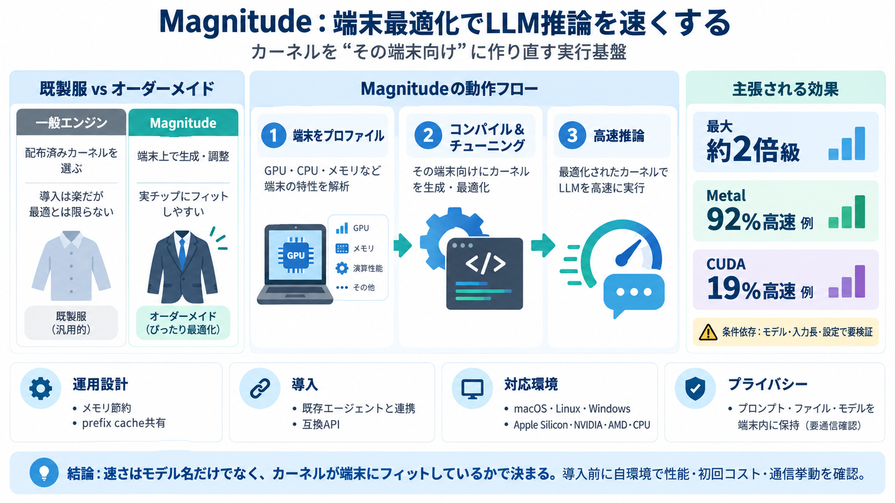

Launch HN: Magnitude (YC S25) – Self-optimizing inference engine for agents
We take inspiration from the best innovations in inference from academics (e.g. FlashAttention, FlashInfer, TurboQuant) …

We take inspiration from the best innovations in inference from academics (e.g. FlashAttention, FlashInfer, TurboQuant) …
Single RTX 3090 / 4090 / 5090: ExLlamaV2 for EXL2 local inference. llama.cpp for GGUF or portability. vLLM if serving mu…
No. It runs in the background, loads models when your agent needs them, and unloads them when idle or memory gets tight.…
## FAQ What is Magnitude? An open source inference engine optimized for consumer hardware. The desktop app profiles yo…
Running the commands below will generate the benchmark results with the inference using the default GEMM library `rocBLA…